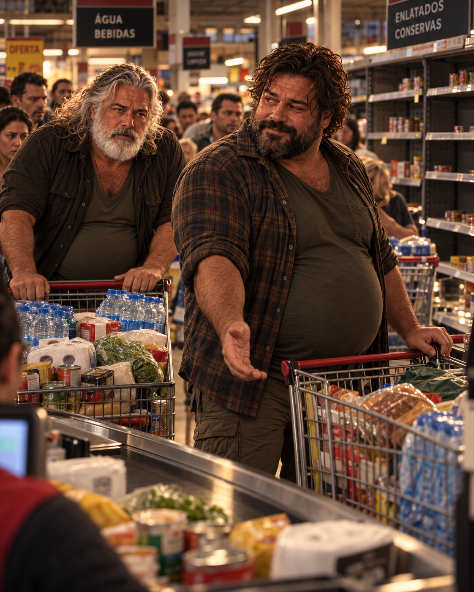

Capítulo I
O Encontro
Cael chegou ao trabalho naquela manhã como chegava sempre: dez minutos antes do horário, café em copo de plástico, uma piada pronta para quem cruzasse com ele no corredor. Era assim que as pessoas o conheciam havia anos — o homem que sabia transformar uma segunda-feira ruim em assunto de conversa, que lembrava o aniversário de meio escritório e contava a mesma história de três jeitos diferentes, cada vez um pouco melhor que da vez anterior. Ninguém ali sabia, ou perguntava, por que ele vivia sozinho desde a separação, nem por que, nos últimos meses, passava os intervalos de almoço grudado no celular, lendo fóruns que a maioria chamaria de delírio de gente com tempo demais.
Ele próprio hesitava em dar nome ao que sentia. Não era medo, exatamente — medo paralisa, e Cael nunca parara de se mover. Era mais parecido com uma vigília antiga, uma desconfiança que o acompanhava desde jovem e que ele aprendera a esconder sob o verniz de homem fácil, de riso solto, de quem sempre tinha uma mulher nova para contar nas rodas de bar. A desconfiança dizia que o mundo, por baixo de sua rotina de contracheques e trânsito, era mais frágil do que qualquer um estava disposto a admitir. Fazia anos que ele vinha se preparando para essa fragilidade, em silêncio, sem alarde — comprara o terreno no campo como quem compra um capricho de solteiro, e debaixo da casa simples erguera, tijolo a tijolo, reforço a reforço, aquilo que só ele conhecia por inteiro: um bunker pensado para sustentar um homem só por cinco anos. Chamava-o, sem que ninguém mais soubesse do apelido, de Cidade de Um Só Homem. Era, ao mesmo tempo, sua maior vaidade secreta e sua maior solidão planejada.
Naquela manhã, os sinais que ele vinha acompanhando havia semanas — interferências nos rádios de onda curta, relatos soltos em fóruns que a imprensa grande ainda não tocava, um nervosismo difuso nas falas das pessoas — pareciam ter engrossado de um dia para o outro. Cael não disse nada a ninguém no escritório. Contou uma piada, riu com os outros, e no fundo manteve a contagem que fazia havia anos: quanto tempo ainda teria, se tivesse.
No caminho de volta, decidiu passar no supermercado. Não era o dia de compras, mas alguma coisa nele — a mesma vigília de sempre, agora mais alta — pedia reforço. Quando chegou, entendeu que não era o único a sentir aquilo.
O supermercado estava tomado por uma pressa que não lhe era estranha, mas que ali, multiplicada por dezenas de pessoas ao mesmo tempo, ganhava um peso diferente. Carrinhos se cruzavam sem pedir licença. Prateleiras de água e enlatados já mostravam buracos onde antes havia fileiras inteiras. Uma mulher discutia em voz alta com um funcionário sobre o limite de compra por cliente; um casal mais velho carregava, cada um, uma caixa de velas. Ninguém parecia querer olhar para o vizinho — olhar significava reconhecer que todos ali estavam com o mesmo receio, e reconhecer isso em voz alta parecia, de algum jeito, torná-lo mais real.
Cael entrou nessa correnteza como quem já sabe nadar nela. Pegou o que faltava em sua lista mental — algumas coisas pequenas, um complemento ao que já tinha estocado havia anos — e seguiu para o caixa com o mesmo automatismo de quem repete um gesto sabido. Foi na fila que notou o homem à sua frente.
Era corpulento, de barba curta e bem cuidada, olhos atentos que, mesmo ali, no meio daquela agitação, não pareciam apressados do jeito que os outros estavam. Segurava poucos itens — o suficiente para um ou dois dias, não para um cerco. Cael, impaciente, calculava mentalmente quanto tempo aquilo ainda levaria, quantos minutos o separavam do carro, da estrada, de casa.
O homem olhou para trás, viu a pressa impressa no rosto de Cael — aquele jeito de quem se controla para não demonstrar — e, sem perguntar nada, sem precisar de explicação, deu um passo para o lado.
— Pode ir na frente — disse, num tom que não pedia agradecimento. — Parece que você tem mais pressa que eu.
Foi tudo. Nenhuma fila parou para testemunhar, nenhum funcionário percebeu, ninguém ao redor interrompeu o próprio carrinho para admirar o gesto. No meio de uma loja onde cada pessoa parecia disputar centímetros de prateleira e segundos de caixa, aquele homem cedera algo que, naquele dia, tinha valor: tempo. Cael murmurou um obrigado apressado, quase engolido pela pressa de sair, e seguiu para o caixa sem se deter.
Levou o troco, as sacolas, e já estava na porta automática quando, por um instante, olhou para trás. O homem continuava na fila, paciente, como se o mundo lá fora não estivesse na mesma corrida que todos os outros pareciam correr. Cael não soube seu nome. Não tinha por que imaginar que aquele rosto voltaria a cruzar o seu caminho, e seguiu para o estacionamento com a cabeça já em outra coisa.
O resto da tarde correu em tarefas menores — uma parada no posto, onde a fila para abastecer já dava volta no quarteirão, e os frentistas trabalhavam com uma pressa seca, sem as piadas de sempre. Em algum momento, o rádio do carro, que até então tocava música, começou a falhar, a voz do locutor cortada por um chiado cada vez mais insistente. Cael desligou o aparelho e seguiu dirigindo em silêncio, a mão tamborilando no volante, os olhos subindo ao céu com mais frequência do que o trânsito recomendava.
Foi no meio de uma avenida, parado num sinal vermelho que parecia não querer abrir, que o céu se rasgou.
Não houve som antes — apenas uma claridade súbita, como se alguém tivesse aberto, bem no alto, uma fenda entre o dia e alguma coisa que não tinha nome. A luz cortou o azul em listras que pareciam, por um instante, desenhadas por mão humana, de tão retas, de tão impossíveis. Os carros ao redor pararam de buzinar. Por um segundo — só um — ninguém se moveu, como se o mundo inteiro tivesse prendido a respiração ao mesmo tempo.
Cael não precisou de mais nada para saber. Não era meteoro. Não era incêndio na cidade, nem qualquer coisa que pudesse ser explicada por um noticiário da noite. Era exatamente o tipo de evento que ele vinha temendo havia anos, sem nunca ter certeza de que chegaria a vê-lo com os próprios olhos — e agora estava ali, acima dele, incandescente, indiferente ao sinal vermelho que teimava em não abrir.
Ele girou o volante antes mesmo de decidir conscientemente para onde ia. O corpo sabia o caminho de cor: havia percorrido aquela estrada em pensamento dezenas de vezes, planejando rotas, calculando tempos, imaginando exatamente este momento. Acelerou pelas ruas que levavam para fora da cidade, driblando carros que começavam a parar no meio da pista, buzinas que agora soavam em pânico, não mais em impaciência. O rádio, quando tentou ligá-lo de novo, devolveu apenas estática.
Foi numa curva, já na estrada que ligava a cidade ao campo aberto, que viu os vidros espalhados no asfalto antes mesmo de ver o carro.
Um veículo estava destroçado na lateral da pista, a lataria amassada contra o acostamento, um rastro de freada longo demais para ter sido controlado. Não havia sinal do outro carro — quem quer que fosse o responsável, havia fugido, deixando para trás o que causara. E, caído a poucos metros do veículo, meio virado de lado, um corpo.
Cael passou direto. O instinto de sobrevivência, treinado por anos de simulação mental, disse-lhe para seguir: cada minuto perdido ali era um minuto a menos de vantagem sobre o que estava vindo do céu. Mas, cem metros adiante, o pé tirou sozinho do acelerador. Ele parou o carro no acostamento, olhou pelo retrovisor, e viu de novo aquele corpo imóvel na beira da estrada.
Não soube dizer, depois, o que o fez dar ré. Não foi cálculo — cálculo mandava seguir. Não foi medo de ser julgado, porque não havia mais ninguém ali para julgar coisa alguma. Foi algo que não tinha nome pronto, algo que o fez desligar o motor, descer do carro e caminhar de volta até o homem caído, no meio de um mundo que começava a se desfazer ao redor dos dois.
Reconheceu-o antes de chegar perto o suficiente para confirmar: a barba, os ombros largos, o corpo que havia cedido passagem naquela fila, horas antes, como se o tempo fosse algo que se pudesse doar sem pedir nada de volta. Agora estava ali, imóvel, o rosto marcado por um corte acima da sobrancelha, a respiração visível apenas num tremor fraco do peito.
Cael dobrou os joelhos ao lado dele. Tocou-lhe o ombro, chamou, sem resposta. O clarão, acima deles, abriu-se outra vez, maior, engolindo um pedaço maior do horizonte, e por um instante o céu inteiro pareceu feito da mesma luz branca que havia cortado a avenida mais cedo.
Não havia tempo para hesitar mais. Cael passou os braços por baixo do corpo do desconhecido — pesado, mais pesado do que parecia a distância — e ergueu-o com um esforço que lhe dobrou a respiração. Carregou-o até o carro, acomodou-o como pôde no banco traseiro, e voltou a dirigir, agora com mais carga, mais pressa, e uma certeza nova que não fazia sentido algum, mas que não o abandonava: não sabia o nome daquele homem, não sabia por que tinha parado, mas sabia que deixá-lo ali teria sido abandonar alguma coisa dentro de si mesmo que ele próprio não conseguia nomear.
A estrada de terra até a propriedade era curta, mas naquele dia pareceu infinita. Quando a casa simples finalmente apareceu à frente, Cael parou o carro o mais perto possível da porta e desligou o motor, mas não o pensamento — o pensamento já corria à frente dele, calculando.
Tirar o desconhecido do banco de trás já exigiu mais do corpo do que o esforço anterior: os braços de Cael tremiam, e o peso do outro homem, agora morto nas próprias pernas, parecia maior a cada passo. Arrastou-o mais do que carregou, apoiando-o contra o próprio ombro, até deixá-lo deitado no chão da sala, sobre um tapete grosso — o único amparo que tinha à mão naquele instante. Precisava decidir rápido. Lá embaixo, na Cidade de Um Só Homem, havia um catre — o dele, o único que jamais imaginara dividir. Não havia segunda cama pronta, porque nunca houvera planejamento para uma segunda pessoa. Havia, sim, guardada num armário de ferramentas e equipamentos que ele mantinha havia anos, uma cama de campanha — dessas dobráveis, de lona reforçada e estrutura de metal, do tipo que ele reconhecia bem por familiaridade com material de sobrevivência, embora nunca tivesse tido motivo para usá-la de verdade.
Foi buscá-la. Carregou-a dobrada sobre o ombro até a passagem que descia para o bunker, e ali o espaço estreito da escada o obrigou a descer de lado, um degrau de cada vez, segurando a estrutura de metal contra o corpo para que não batesse nas paredes.
Montá-la na sala foi mais rápido do que esperava: as dobradiças resistiram um pouco, enferrujadas pelo tempo parado, mas cederam ao segundo esforço.
O mais difícil ainda estava por vir. Voltou à casa, ajoelhou-se ao lado do desconhecido e tentou erguê-lo como fizera na estrada — mas os braços, já exauridos pelo dia inteiro, não responderam do mesmo jeito. Teve de improvisar: passou os braços do outro homem por cima dos próprios ombros, firmou-se contra a parede da escada e desceu de costas, um degrau atrás do outro, o peso alheio escorregando contra o seu a cada movimento, os pés do desconhecido batendo surdamente nos degraus de concreto. Nos últimos metros, sem mais força nos braços para sustentar, deixou que o corpo escorregasse até o chão da sala e, dali, arrastou-o pelos ombros até a cama de campanha, erguendo-o por fim, com o que lhe restava de fôlego, para deitá-lo sobre a lona esticada.
Ficou parado por um instante, as mãos nos joelhos, recuperando o fôlego, olhando para aquele corpo estranho ocupando um espaço que, até aquele dia, não existia nos planos de ninguém.
Foi só depois de fechar a porta blindada — o som surdo e definitivo do metal reforçado encontrando sua trava — que Cael se deu conta do óbvio: tinha estocado, planejado e calculado tudo o que um homem sozinho poderia precisar para sobreviver cinco anos ali dentro. O que não tinha era um plano para dividir aquele espaço com outra pessoa. E agora, de repente, tinha as duas coisas ao mesmo tempo: os recursos, e o homem que dormia, sem saber, sobre eles.
Capítulo II
A Vida Antes do Fim
Leal acordou antes do despertador, como vinha acontecendo havia meses — o corpo parecia ter decidido, por conta própria, que não precisava mais do aviso de ninguém. Ficou um instante deitado, olhando o teto, antes de se levantar e seguir para a cozinha, onde o ritual de sempre o esperava: moer o café, encher a chaleira, abrir a janela que dava para o quintal pequeno e deixar o cheiro de grama molhada entrar antes do calor do dia tomar conta de tudo.
A casa era comum, num bairro de ruas que ele conhecia de cor — os mesmos vizinhos cumprimentando da calçada, o mesmo cachorro do número 14 latindo para tudo que passasse, a mesma padaria na esquina cujo dono sabia seu pedido antes de ele abrir a boca. Nada ali chamava atenção de fora. Só por dentro, se alguém prestasse atenção aos detalhes certos, é que notaria as marcas de um espaço pensado, em algum momento, para duas pessoas: a toalha única pendurada no gancho do banheiro, onde antes havia duas; o sofá de dois lugares que continuava recebendo só um corpo à noite; as duas xícaras que ainda viviam lado a lado no armário, mesmo que uma delas já não fosse usada havia tempo.
Leal preparou o café, torrou um pão, sentou-se à mesa com um único lugar posto, como sempre fazia agora. Ligou a televisão baixinho, mais por companhia do que por interesse, e comeu ouvindo um apresentador comentar, entre uma notícia e outra, sobre interferências estranhas em sinais de rádio e televisão em algumas regiões do país. Era o tipo de notícia que se ouve e esquece — curiosidade de manhã, não motivo de preocupação. Ele nem registrou o nome do fenômeno que mencionaram.
Foi lavando a xícara que abriu a geladeira por hábito, sem necessidade real, e encontrou-a quase vazia — um resto de leite, um ovo solitário, pouco mais que isso. Decidiu ali mesmo que aquele seria um dia de supermercado. Nada de planejamento maior que isso — só a vontade comum de ter o que comer na semana, talvez aproveitar para comprar aquele queijo que gostava e que nem sempre encontrava. Com isso resolvido, seguiu para o banho, já sabendo que sairia logo.
Não teve pressa debaixo d'água quente, o vapor subindo, o corpo relaxando antes de qualquer coisa que o dia pudesse exigir. Ensaboou os braços grossos, a barriga volumosa e arredondada que carregava sem cerimônia havia a vida toda, os pelos espessos que cobriam o peito e desciam pelo abdômen — tudo familiar, tudo seu, sem o menor sinal de que precisasse ser outra coisa. Secou-se devagar, passou os dedos pela barba cheia diante do espelho embaçado, aparando um ou outro fio que insistia em crescer torto, e cruzou por um instante o próprio olhar no vidro — os olhos castanhos, cansados daquela hora da manhã, mas firmes do jeito de sempre — antes de notar, sem se incomodar, os primeiros fios grisalhos se misturando ao castanho-escuro da barba. Um sinal discreto dos anos, que ele registrava com a mesma tranquilidade com que notava qualquer outra mudança do corpo.
Escolheu a roupa do dia como escolhia sempre: uma camiseta larga o bastante para acompanhar os ombros e o peito sem apertar em lugar nenhum, uma bermuda confortável, os chinelos de sempre. Passou a mão pelos cabelos ondulados e volumosos, achou que estavam bons do jeito que estavam, e seguiu para fora sem se deter mais tempo diante do espelho do que o necessário. Não era vaidade o que o movia ali — era só o gesto comum de um homem que gostava de se sentir bem dentro da própria pele, nada além disso.
O supermercado, quando chegou, estava mais cheio do que o normal para um dia de semana. Levou alguns minutos para notar que não era só movimento — era outra coisa, um jeito de as pessoas empurrarem os carrinhos, de evitarem olhar umas para as outras, de conversarem baixo e rápido perto das prateleiras de água e enlatados, que já mostravam buracos onde antes havia fileiras inteiras. Leal reparou, achou estranho, pensou por um instante na notícia das interferências que ouvira de manhã, e seguiu seu próprio ritmo, sem se deixar contagiar pela pressa alheia. Não tinha vindo ali por medo de nada — só precisava de leite, de pão, de alguns itens da semana.
Foi na fila do caixa que notou o homem atrás dele, carrinho encostado contra o corpo como se ele próprio precisasse se firmar em algo.

Era um homem grande, de cinquenta e poucos anos, largo de ombros e pesado de presença, a barriga pronunciada por baixo de uma camisa que parecia ter sido escolhida sem pensar muito naquela manhã. Os cabelos, longos e ondulados, grisalhos tendendo ao branco, caíam quase nos ombros; a barba, também branca, era cheia e bem cuidada, emoldurando um rosto de olhos azuis que, naquele instante, não paravam quietos. Leal reconheceu ali o tipo — aquele porte robusto, a barba farta, o jeito de ocupar espaço sem se exibir — e seguiu adiante sem se deter no pensamento. O que lhe chamou atenção de verdade não foi a aparência do homem, mas a tensão nela: a mão que apertava a alça do carrinho com força maior do que o peso das compras exigia, o peso do corpo trocando de uma perna para a outra numa cadência quase mecânica, os olhos subindo e descendo entre a fila à frente e algum ponto distante que só ele parecia ver.
Leal olhou para o próprio carrinho — poucos itens, nada que justificasse pressa — e depois para trás de novo. Não pensou muito antes de dar um passo para o lado, puxando seu carrinho consigo.
— Pode ir na frente — disse. — Parece que você tem mais pressa que eu.
O homem murmurou um agradecimento apressado, quase sem erguer os olhos, e empurrou o carrinho à frente do dele. Leal ficou ali, observando as costas largas se afastarem em direção ao caixa, e voltou a atenção para o próprio carrinho sem dar maior importância ao gesto. Era o tipo de coisa que fazia sem pensar — ceder um lugar, segurar uma porta, deixar alguém passar na fila — pequenas moedas que ele gostava de distribuir, sem cobrar troco de ninguém.
Só depois, já caminhando para o estacionamento com as próprias sacolas, é que a sensação de estranheza voltou com mais força. Olhou em volta — o movimento do estacionamento, as pessoas carregando compras demais para uma semana comum, um casal discutindo perto do carro sobre quanto tempo ainda dava para ficar fora de casa — e sentiu, pela primeira vez naquele dia, que talvez não fosse só impressão sua. Alguma coisa estava mudando, e estava mudando rápido.
Dirigiu de volta sem pressa, pela via que levava de seu bairro até a borda da cidade — a mesma que, mais adiante, deixava para trás as últimas construções e se estreitava em estrada rumo ao campo aberto. Ainda tentava decidir se valia a pena se preocupar com aquilo ou se era só o tipo de boato que se espalha e se esvai sozinho. Foi numa curva, já perto do limite entre o bairro e o descampado, que viu o acidente.
Um carro estava fora da pista, parte da lataria amassada contra uma árvore próxima ao acostamento, vidros espalhados brilhando no asfalto. Havia pessoas ao redor — não muitas, três ou quatro, movendo-se de um jeito que misturava confusão e urgência. Leal parou o carro sem pensar duas vezes, puxando-o para o acostamento um pouco à frente, e desceu correndo.
— Precisam de ajuda? — perguntou, já se aproximando do veículo destruído.
Foi só quando chegou perto o bastante do grupo que percebeu: o clima ali não era só de socorro. Um dos homens, mais alto, com uma mancha de sangue no braço que não parecia grave o bastante para justificar a urgência na voz, gritava algo sobre precisar sair da cidade, sobre não haver tempo, sobre o céu — e apontava, com um gesto largo, para cima.
Leal ergueu os olhos e viu as primeiras listras de luz cortando o azul, altas demais para serem nuvens, retas demais para serem qualquer coisa natural que ele conhecesse.
Não teve tempo de processar o que aquilo significava. O homem do braço ferido avançou na direção dele, e outro, mais atrás, gritava para que corressem, que pegassem qualquer carro que ainda andasse. Leal recuou um passo, as mãos erguidas, tentando dizer que não havia problema, que podiam usar o carro dele se precisassem tanto assim — mas a frase não saiu inteira. Um braço o empurrou com força, ele perdeu o equilíbrio contra a lateral do carro acidentado, bem perto da lataria amassada, e o mundo, por um instante, virou só som: vidro quebrando, vozes sobrepostas, um golpe que ele não viu vir atingindo-o acima da sobrancelha.
Tentou se segurar em alguma coisa — a porta amassada do carro estranho, talvez, ou o próprio ar — e sentiu o chão vir ao seu encontro antes de entender que tinha caído. Ouviu, de muito longe, o som do motor do seu próprio carro sendo ligado, pneus derrapando no asfalto, vozes se afastando. Tentou erguer a cabeça, mas o mundo girava devagar, as listras de luz lá em cima ainda abrindo o céu em fendas cada vez maiores.
O último pensamento que conseguiu formar, antes de tudo escurecer, não tinha forma de frase. Era mais uma sensação de absurdo — a certeza vaga de que tinha parado para ajudar e, por isso mesmo, perdido tudo o que levava consigo — antes de o escuro engolir também essa constatação.